10-容器化部署案例
1.wordpress容器化
为什么要容器和？
为的就是容器提供的隔绝的名称空间，彻底解决软件依赖的错误，特别是php这种语言，经常性的需要更新，出现版本漏洞等，以及太多的版本，太多的依赖，难以管理，将你的宿主机搞的一团糟。
容器化之后，太香了。
具体如何描述要容器化迁移？
1. 便于快速更新，因为如php后端是不是得出现一个版本漏洞，需要更新php依赖等操作；
但是更新就是等于挖大坑，你一堆服务依赖某一个LNMP环境运行，牵一发而动全身；
2.因此使用容器化部署后，利用wordpress镜像，运行多个容器实例，基于nginx实现反向代理，完成LB，后续的更新，只需要更新，提交一个新版镜像，秒级内就可以升级出一个新的容器后端。
3.足够的安全，应用部署在容器环境内，在禁止了特权模式下，对宿主机也是一种保护。
（例如之前超哥讲的redis反序列化破解root密码，redis跑在容器里，又多了一层保护不是么）
4. 整体架构性能得到大幅度提升，效率提升。
宿主机、容器架构图
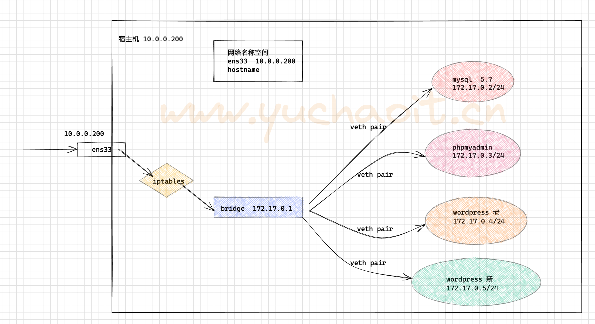
容器化部署架构下，宿主机的namespace安装 nginx提供LB功能，以及iptables实现数据包转发，以及提供服务器防护；
nginx的LB也就是网关的功能，所有的服务需要经过nginx允许后，才能进入后续的容器；
nginx需要配置反向dialing，以及对http信息的校验，也会加入https的安全通信。
以此架构实现一个安全的容器化应用环境。
请求通信流程
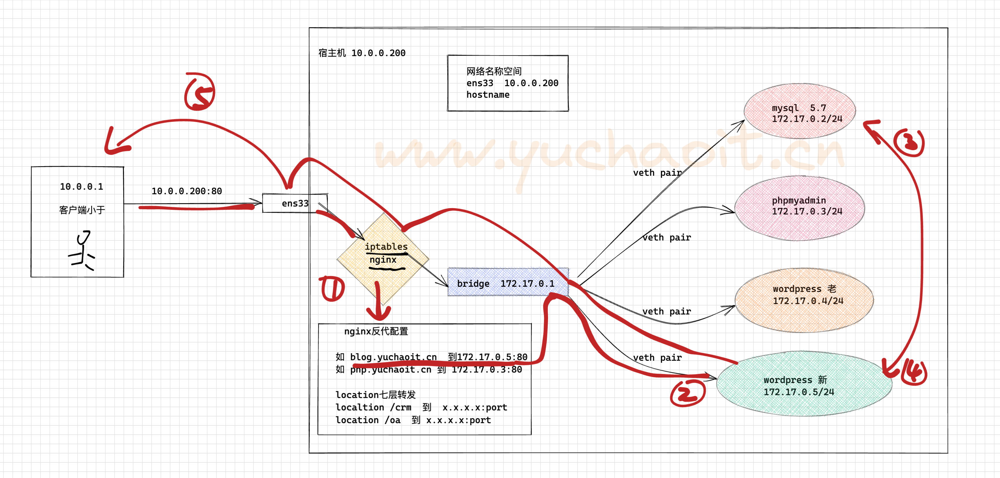
请求： client > iptables/nginx > 容器
响应： 容器 > nginx / iptables > client
nginx提供网关功能，针对client请求信息，进行七层lb。
部署
1.先启动数据库，因为其他容器的运行，需要读取数据库
2.需要传入环境变量
3.建议数据做好宿主机映射，挂载数据目录，以及配置文件
准备好如下配置文件
[root@docker-200 ~]#mkdir /data/mysql-config/ -p
cat > /data/mysql-config/my.cnf <<'EOF'
[mysqld]
port=3306
user=mysql
default-character-set=utf8mb4
default-collation-server=utf8mb4_general_ci
[mysql]
socket=/tmp/mysql.sock
default-character-set=utf8mb4
default-collation-server=utf8mb4_general_ci
EOF
# 运行数据库
docker run \
--restart=always --name www.yuchaoit.cn_mysql -d \
-v /data/mysql-data:/var/lib/mysql \
-e MYSQL_ROOT_PASSWORD="www.yuchaoit.cn" \
-v /etc/my-config/:/etc/mysql \
-d mysql:5.7.25
# 部署phpmysqladmin
# 连接到数据库
docker run --restart=always --name www.yuchaoit.cn_phpadmin -d \
-e PMA_HOST=172.17.0.2 \
-e UPLOAD_LIMIT=128M \
phpmyadmin
# 部署wordpress
# 创建目录
mkdir -p /data/wordpress-data
# 启动wordpress
docker run -d --restart=always --name www.yuchaoit.cn_wordpress \
-v /data/wordpress-data:/var/www/html \
wordpress
# 开启内核转发参数
net.ipv4.ip_forward = 1
# 宿主机部署nginx
# docker内的日志输出，是输出到了stdout，stderr，因此我们可以docker logs 查看
yum install nginx -y
# 转发业务配置
server {
listen 80;
server_name 10.0.0.200;
location /
{
# 默认转发给wordpress
proxy_pass http://172.17.0.4:80/;
proxy_set_header Host $http_host;
proxy_set_header X-Forwarded-For $proxy_add_x_forwarded_for;
proxy_connect_timeout 30;
proxy_send_timeout 60;
proxy_read_timeout 60;
proxy_buffering on;
proxy_buffer_size 32k;
proxy_buffers 4 128k;
}
}
# phpadmin配置
server {
listen 81;
server_name 10.0.0.200;
location / {
proxy_pass http://172.17.0.3:80/;
proxy_set_header Host $http_host;
proxy_set_header X-Forwarded-For $proxy_add_x_forwarded_for;
proxy_connect_timeout 30;
proxy_send_timeout 60;
proxy_read_timeout 60;
proxy_buffering on;
proxy_buffer_size 32k;
proxy_buffers 4 128k;
}
}
访问wordpress容器化
http://10.0.0.200/wp-admin/setup-config.php
提取所有容器ip
[root@docker-200 /etc/nginx]#docker inspect --format='{{.Name}} - {{range .NetworkSettings.Networks}}{{.IPAddress}}{{end}}' $(docker ps -aq)
/www.yuchaoit.cn_wordpress - 172.17.0.4
/www.yuchaoit.cn_phpadmin - 172.17.0.3
/www.yuchaoit.cn_mysql - 172.17.0.2
# 创建数据库
[root@docker-200 /etc/nginx]#docker exec www.yuchaoit.cn_mysql mysql -uroot -pwww.yuchaoit.cn -e "create database wordpress charset utf8;"
mysql: [Warning] Using a password on the command line interface can be insecure.
wordpress密码
chaoge
chaoge666
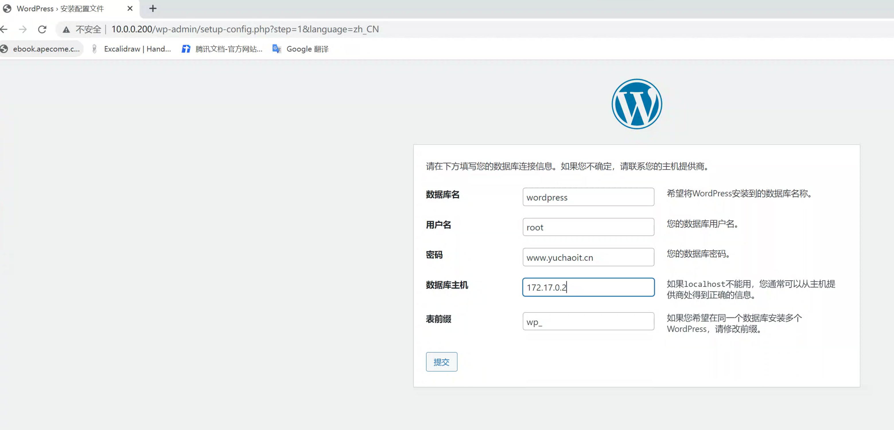
发布博客
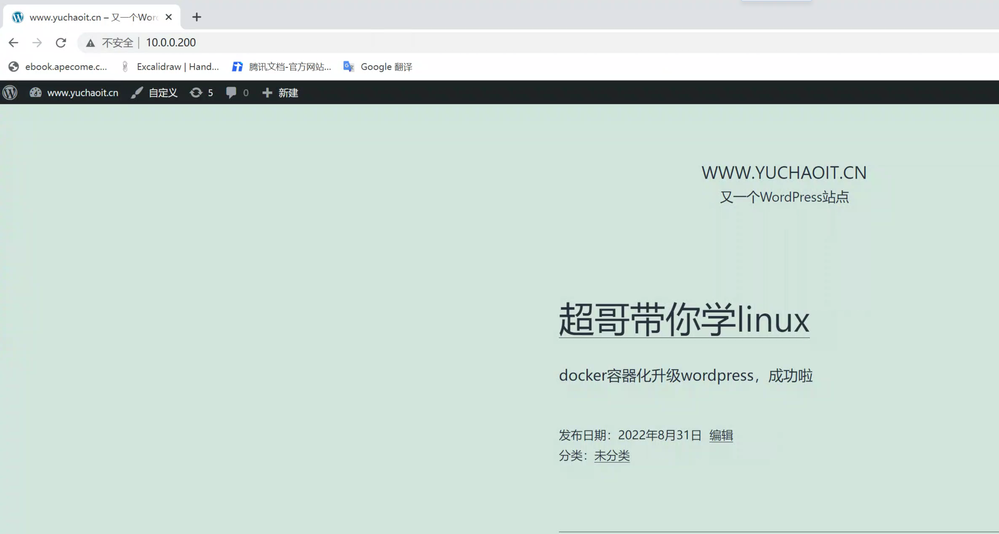
宿主机读取容器数据
yum install mysql -y
[root@docker-200 /etc/nginx]#docker exec www.yuchaoit.cn_mysql mysql -uroot -pwww.yuchaoit.cn -e "grant all privileges on *.* to root@'%' identified by '123456'"
[root@docker-200 /etc/nginx]#docker exec www.yuchaoit.cn_mysql mysql -uroot -pwww.yuchaoit.cn -e "flush privileges"
[root@docker-200 /etc/nginx]#mysql -uroot -p123456 -h 172.17.0.2 -e "select * from wordpress.wp_posts" |grep 超哥
5 1 2022-08-31 21:59:14 2022-08-31 13:59:14 <!-- wp:paragraph -->\n<p>docker容器化升级wordpress，成功啦</p>\n<!-- /wp:paragraph --> 超哥带你学linux publish open open %e8%b6%85%e5%93%a5%e5%b8%a6%e4%bd%a0%e5%ad%a6linux 2022-08-31 21:59:14 2022-08-31 13:59:14 0 http://10.0.0.200/?p=5 0 post 0
7 1 2022-08-31 21:59:14 2022-08-31 13:59:14 <!-- wp:paragraph -->\n<p>docker容器化升级wordpress，成功啦</p>\n<!-- /wp:paragraph --> 超哥带你学linux inherit closed closed 5-revision-v1 2022-08-31 21:59:14 2022-08-31 13:59:14 5 http://10.0.0.200/?p=7 0 revision 0
[root@docker-200 /etc/nginx]#
访问phpadmin
root
123456
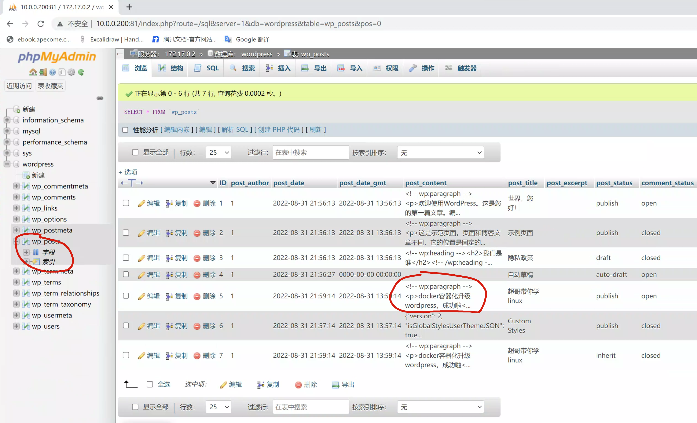
2.zabbix容器化部署
完整命令
zabbix容器化，这里使用--link参数，是为了使用主机名通信。因为link修改了/etc/hosts
1.容器命令
docker run --name mysql \
-p 3306:3306 \
-e MYSQL_ROOT_PASSWORD=123 \
-e MYSQL_DATABASE=zabbix \
-e MYSQL_USER=zabbix \
-e MYSQL_PASSWORD=www.yuchaoit.cn \
-v /data/docker_mysql:/var/lib/mysql \
-d mysql:5.7.25 \
--character-set-server=utf8 --collation-server=utf8_bin
docker run --name zabbix-server-mysql \
--link mysql \
-e DB_SERVER_HOST="mysql" \
-e MYSQL_USER="zabbix" \
-e MYSQL_PASSWORD="www.yuchaoit.cn" \
-p 10051:10051 \
-d zabbix/zabbix-server-mysql
docker run --name zabbix-web-nginx-mysql \
--link mysql \
--link zabbix-server-mysql \
-e DB_SERVER_HOST="mysql" \
-e MYSQL_USER="zabbix" \
-e MYSQL_PASSWORD="www.yuchaoit.cn" \
-e ZBX_SERVER_HOST="zabbix-server-mysql" \
-e PHP_TZ="Asia/Shanghai" \
-p 80:8080 \
-d zabbix/zabbix-web-nginx-mysql
===================================================
2.注释
docker run \
#mysql服务
--name mysql \
#映射端口 宿主机端口:容器内端口
-p 3306:3306 \
#启动Mysql初始化的时候设置root的密码
-e MYSQL_ROOT_PASSWORD=123 \
#初始化时创建的数据库名称
-e MYSQL_DATABASE=zabbix \
#初始化时创建的的普通用户，此用户对刚才创建的数据库拥有所有权限
-e MYSQL_USER=zabbix \
#普通用户的密码
-e MYSQL_PASSWORD=www.yuchaoit.cn \
#将容器内的数据持久化到宿主机，如果已经有数据了，用户传递的变量就失效了
-v /data/docker_mysql:/var/lib/mysql \
#后台启动，使用镜像名称
-d mysql:5.7 \
#设置数据库的字符集
--character-set-server=utf8 --collation-server=utf8_bin
--------------------------------------------------------------------
docker run \
#给zabbix服务端容器起个名字
--name zabbix-server-mysql \
#连接到mysql容器，连接后可以直接使用容器名进行通讯
--link mysql \
#后端mysql的连接地址，这里因为Link了mysql容器，所以可以直接使用容器名通讯
-e DB_SERVER_HOST="mysql" \
#告诉zabbix-server连接mysql使用什么用户
-e MYSQL_USER="zabbix" \
#告诉zabbix-server连接mysql的用户的密码
-e MYSQL_PASSWORD="www.yuchaoit.cn" \
#将zabbix-server的服务端口暴露出来，方便客户端连接
-p 10051:10051 \
#使用镜像名称
-d zabbix/zabbix-server-mysql
--------------------------------------------------------------------
docker run \
--name zabbix-web-nginx-mysql \
--link mysql \
--link zabbix-server-mysql \
#连接数据库的地址，因为link了mysql容器，所以可以直接使用容器名通讯
-e DB_SERVER_HOST="mysql" \
#mysql连接的用户
-e MYSQL_USER="zabbix" \
#mysql连接的用户密码
-e MYSQL_PASSWORD="zabbix" \
#zabbix-server的地址，因为link了zabbix-server的容器，所以可以直接使用容器名通讯
-e ZBX_SERVER_HOST="zabbix-server-mysql" \
#修改php的时区为上海
-e PHP_TZ="Asia/Shanghai" \
#映射web网页端口，通过查看镜像信息得知容器内是8080
-p 80:8080 \
#镜像名称
-d zabbix/zabbix-web-nginx-mysql
登录
默认登录账号
Admin
密码
zabbix
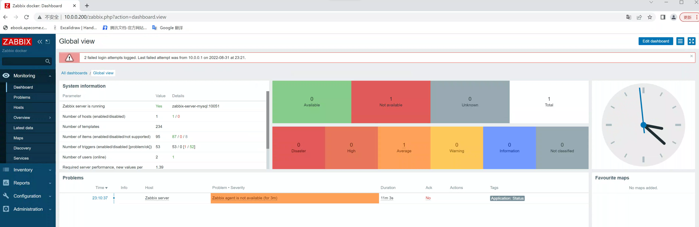
查看mysql数据
[root@docker-200 /etc/nginx]#docker ps
CONTAINER ID IMAGE COMMAND CREATED STATUS PORTS NAMES
89ffbd770ccd zabbix/zabbix-web-nginx-mysql "docker-entrypoint.sh" About a minute ago Up About a minute 8443/tcp, 0.0.0.0:80->8080/tcp, :::80->8080/tcp zabbix-web-nginx-mysql
c8c9ac0371bd zabbix/zabbix-server-mysql "/sbin/tini -- /usr/…" 14 minutes ago Up 14 minutes 0.0.0.0:10051->10051/tcp, :::10051->10051/tcp zabbix-server-mysql
06c88e494e76 mysql:5.7.25 "docker-entrypoint.s…" 15 minutes ago Up 15 minutes 0.0.0.0:3306->3306/tcp, :::3306->3306/tcp, 33060/tcp mysql
[root@docker-200 /etc/nginx]#
[root@docker-200 /etc/nginx]#docker exec mysql mysql -uzabbix -pwww.yuchaoit.cn -e "show databases;"
mysql: [Warning] Using a password on the command line interface can be insecure.
Database
information_schema
zabbix
[root@docker-200 /etc/nginx]#
3.jenkins容器化
1.下载镜像
docker pull jenkins/jenkins
2.创建用户和数据目录并授权
useradd -u 1000 jenkins -M -s /sbin/nologin
mkdir /www.yuchaoit.cn_data/jenkins/ -p
chown -R jenkins:jenkins /www.yuchaoit.cn_data/jenkins/
3.运行镜像
docker run \
--name jenkins \
-p 8080:8080 -p 50000:50000 \
-v /www.yuchaoit.cn_data/jenkins/:/var/jenkins_home \
-d jenkins/jenkins
4.安装插件
tar zxf jenkins_plugins.tar.gz
mv plugins /www.yuchaoit.cn_data/jenkins/
chown -R jenkins:jenkins /www.yuchaoit.cn_data/jenkins/
docker restart jenkins
5.查看默认登录密码
[root@docker-200 /opt]#cat /www.yuchaoit.cn_data/jenkins/secrets/initialAdminPassword
9f9534d8edd646ea89011111b81ffbc0
[root@docker-200 /opt]#
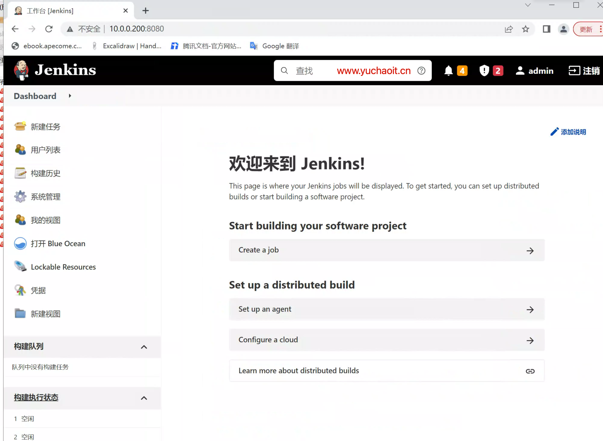
jenkins容器如何提权？
1.我们知道jenkins默认用户是jenkins，权限较低，cicd很不方便
[root@docker-200 /opt]#docker inspect jenkins | jq
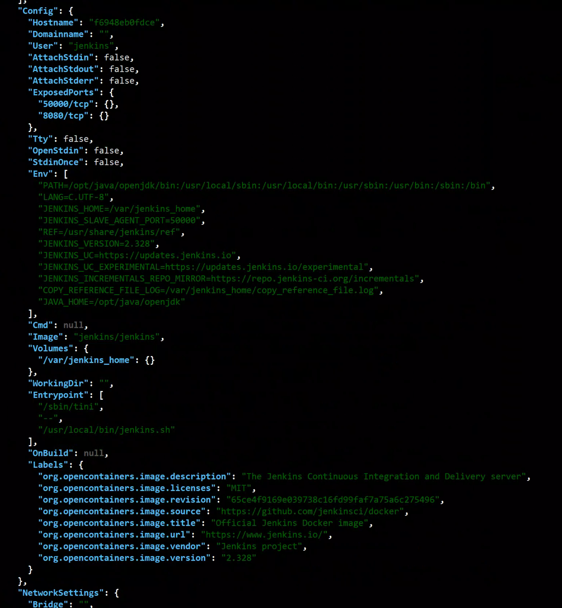
提权配置
6.如何指定root用户运行jenkins容器
docker run \
--name jenkins \
-p 8080:8080 -p 50000:50000 \
--privileged=true \
--user root \
-v /www.yuchaoit.cn_data/jenkins/:/var/jenkins_home \
-d jenkins/jenkins
# 在看权限
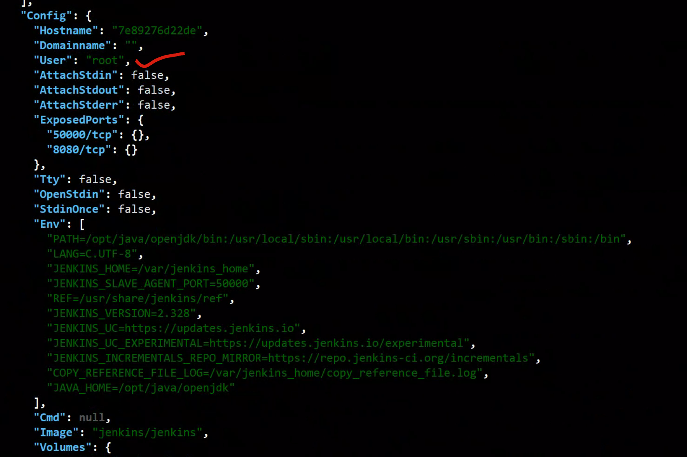
如何在容器化的jenkins里，再执行docker命令？
我们毕竟要基于jenkins去实现对容器的管理，那么jenkins所处的运行环境，也得安装docker命令，或者走http的管理接口更为方便。
这里于超老师提供的是一个容器内再部署docker的方案。
方案1：容器内再安装docker（放弃）
更新源并安装docker-ce
#更新源
cat > /etc/apt/sources.list << 'EOF'
deb https://mirrors.tuna.tsinghua.edu.cn/debian/ buster main contrib non-free
deb https://mirrors.tuna.tsinghua.edu.cn/debian/ buster-updates main contrib non-free
deb https://mirrors.tuna.tsinghua.edu.cn/debian/ buster-backports main contrib non-free
deb https://mirrors.tuna.tsinghua.edu.cn/debian-security buster/updates main contrib non-free
EOF
apt update
#安装docker
apt -y install apt-transport-https ca-certificates curl gnupg2 software-properties-common
curl -fsSL https://download.docker.com/linux/debian/gpg |apt-key add -
add-apt-repository \
"deb [arch=amd64] https://mirrors.tuna.tsinghua.edu.cn/docker-ce/linux/debian \
$(lsb_release -cs) \
stable"
apt update
apt install docker-ce -y
#启动docker
/usr/bin/dockerd
#检查结果
docker version
方案2：将宿主机的docker接口，映射到jenkins容器内去访问
docker run \
--name jenkins \
-p 8080:8080 -p 50000:50000 \
--privileged=true \
--user root \
-v /usr/bin/docker:/usr/bin/docker \
-v /var/run/docker.sock:/var/run/docker.sock \
-v /www.yuchaoit.cn_data/jenkins/:/var/jenkins_home \
-d jenkins/jenkins
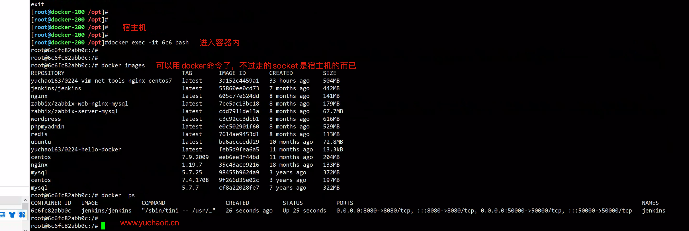
jenkins-compose语法
version: '3'
services:
gitlab:
image: 'jenkins/jenkins:latest'
container_name: jenkins
restart: always
privileged: true
user: root
ports:
- '8080:8080'
- '50000:50000'
volumes:
- '/data/jenkins:/var/jenkins_home'
- '/var/run/docker.sock:/var/run/docker.sock'
- '/usr/bin/docker:/usr/bin/docker'
- '/root/.ssh:/root/.ssh'
4.gitlab容器化(docker-compose)
GitLab是类似于Github的开源Git版本管理平台，功能强大且界面美观，通常用于搭建私有代码仓库，是目前公司内部Git版本管理系统的首选方案。
对于一个版本管理系统而言，如何去部署、升级、备份和迁移是一个必须考虑的问题，而Docker由于其容器特性，非常符合我们的需求，最重要的是它不会对现有服务器环境造成任何影响，这里选择Docker的方式部署GitLab
GitLab CE的源码安装十分麻烦，需要安装配置的东西太多。
安装GitLab会有一定的硬件要求，官方建议的是至少1GB内存，双核CPU以上
建议docker-compose去安装这种，需要部署多个容器的应用
wget https://raw.githubusercontent.com/sameersbn/docker-gitlab/master/docker-compose.yml
docker-compose -f docker-compose.yml up -d
修改配置信息
- GITLAB_HOST=10.0.0.200
- GITLAB_PORT=10089
- GITLAB_SSH_PORT=10022
# 若是要转为docker手工部署方式，就是挨个的获取镜像，以及传入运行参数了。
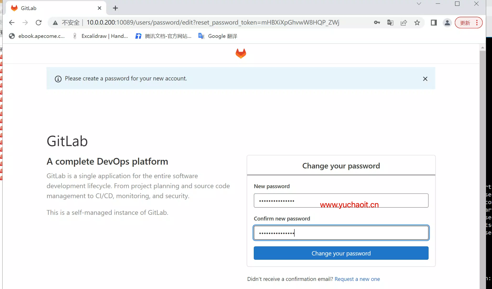
用户>偏好设置>localization>language 换中文
docker exec -it gitlab-ce /bin/bash
gitlab-rails console
user = User.where(username: 'root').first
user.password = 'www.yuchaoit.cn'
user.save!
exit